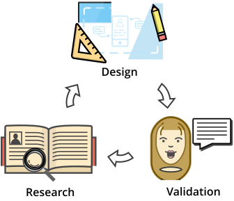
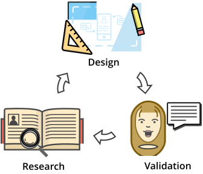
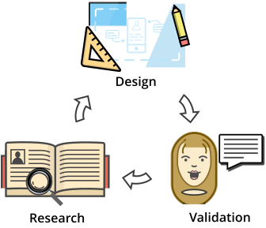

I use Lean UX practices to help teams solve expensive problems. Lean UX is a product discovery and design process which by validating concepts before implementation.
 

I'm a product designer and UI engineer. I live between Boulder and Denver, CO.
I work for Trimble MEP as a Senior UX Designer where I focus on B2B SaaS apps. In a past life, I was a Product Designer and then Product Manager of Growth for Pivotal Tracker. I was also the Senior UX Designer for VictorOps. I created apps like Listacular and PiggyCalc.
My work has been featured in Life Hacker, Beautiful Pixels, AppAdvice and Fortune.

I use Lean UX practices to help teams solve expensive problems. Lean UX is a product discovery and design process which by validating concepts before implementation.

. . . more on Medium
VictorOps Android - Mobile style system
VictorOps New Trial Experience - Onboarding that sells
Pivotal Tracker Analytics - Agile project analytics
Listacular - Award-winning iOS app